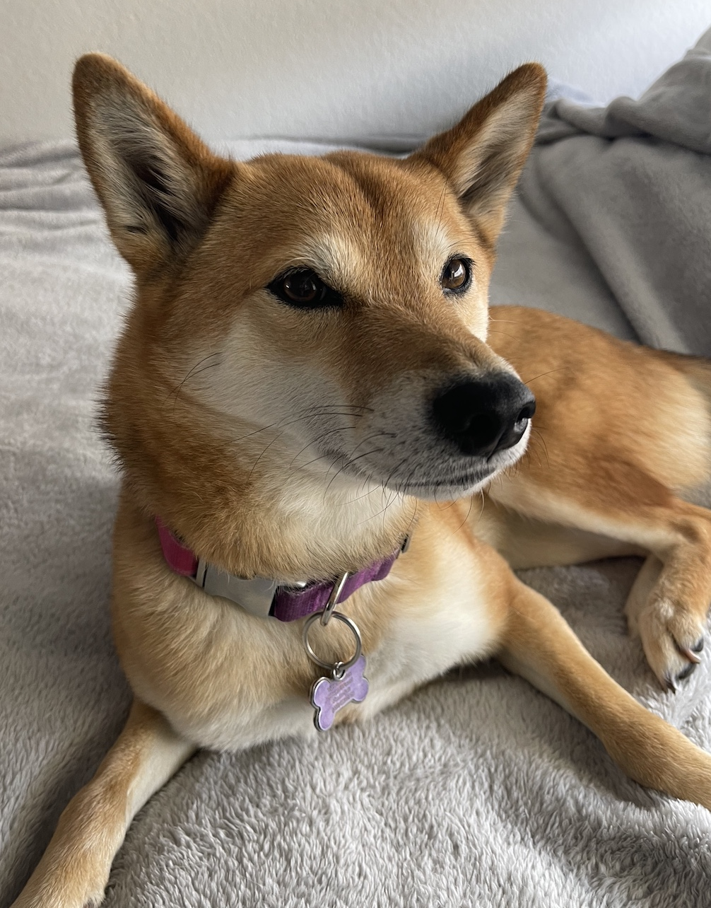

I am a Korean-American millennial based in L.A., with a penchant for photography, painting, and writing. I’m an obsessive problem solver. I enjoy figuring out ways to make processes more efficient. Currently, I’m a Master’s student at USC’s Iovine and Young Academy and an Automation Engineer at ZipRecruiter. I like exploring new places and dabbling in creative projects. I wrote a children’s book about the pandemic from a corgi’s perspective during 2020. The book was a tribute to our family’s late corgi and to the little anchors who kept us going during the pandemic.
Now I own a beautiful Shiba Inu named Yuna. She has been to 6 states and has been to Mexico with me and my husband. She's the best.